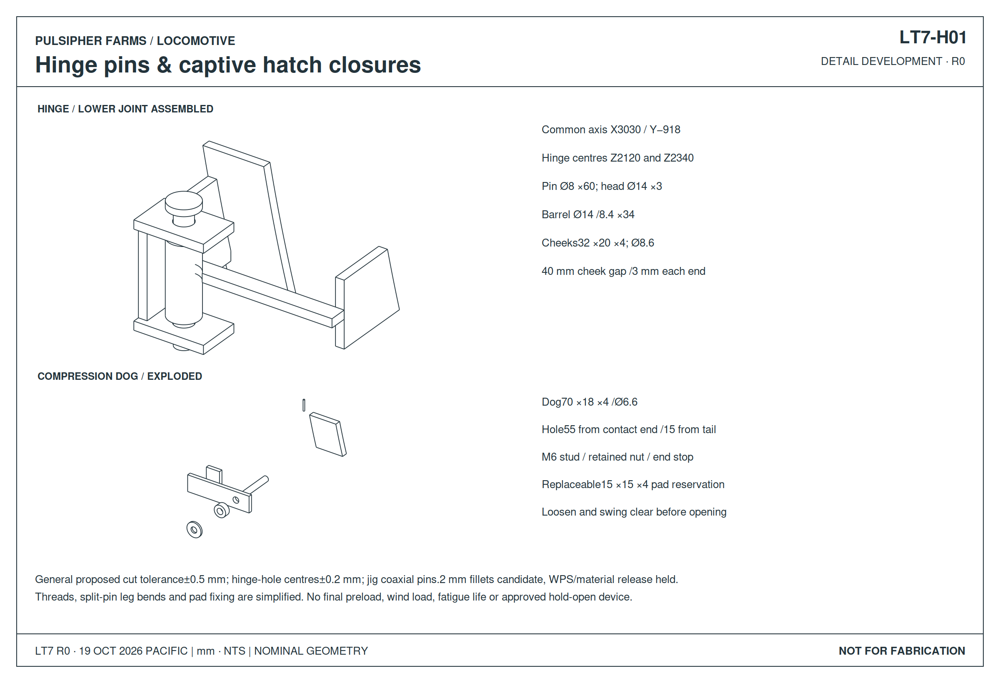
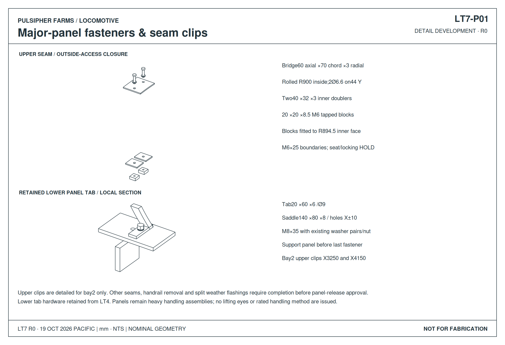
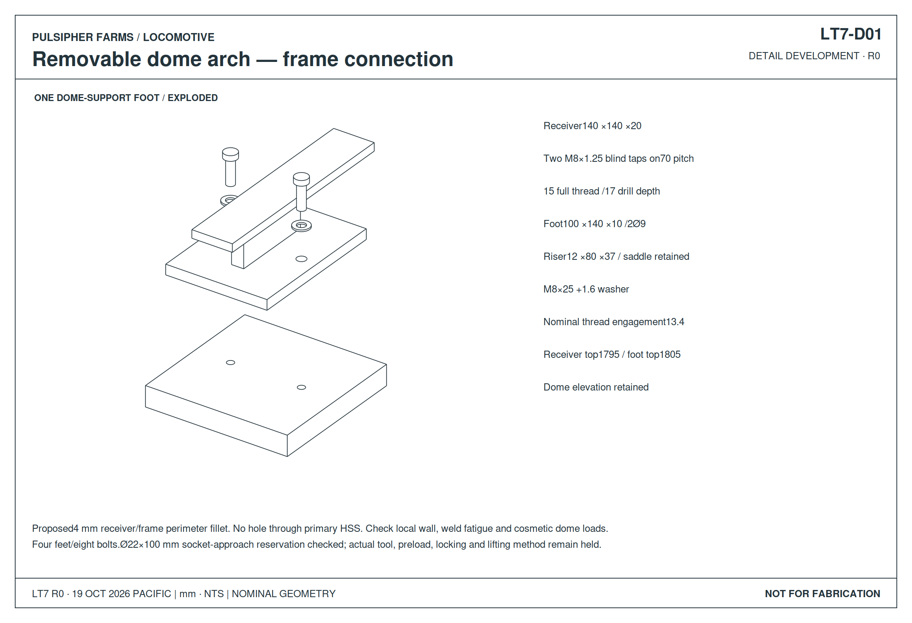
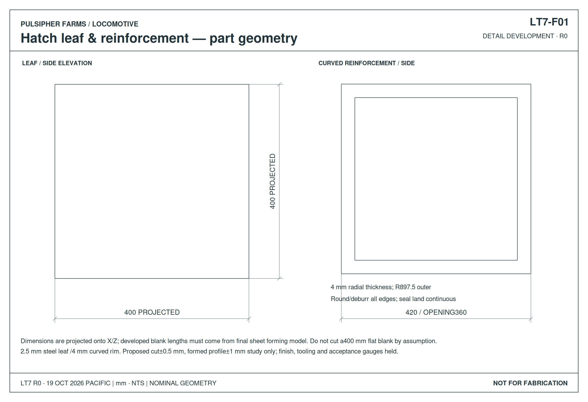
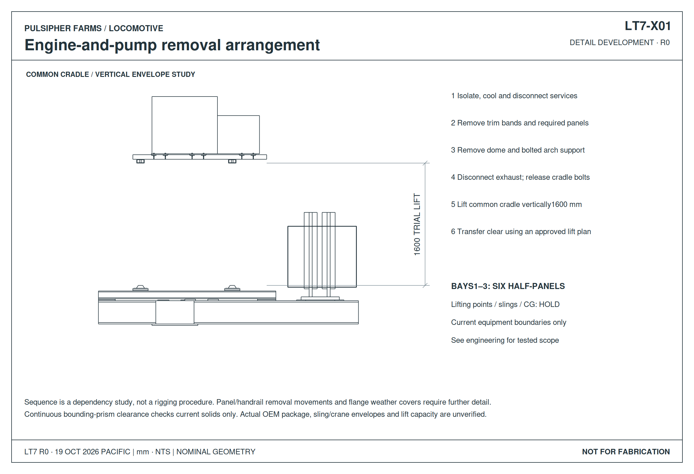

LOCOMOTIVE / LT7
Service access & removable connections
Hatch · Hinges & closures · Panel fasteners · Dome feet · Powerpack removal
DETAIL DEVELOPMENTR0 · Not for fabrication19 October 2026 · Pacific
Detail drawings
Exact CAD projections · Nominal dimensions in mm





Frame top 1,775 mm provisional · Hatch location, OEM service space and lifting plan pending. Open issues & checks →
3D assemblies
Loading…Loading CAD geometry…
Select a component for its definition. Exploded views separate parts for inspection. The lifted view uses the current equipment reservations; it is not an approved rigging plan. Filter and pump withdrawal dimensions remain unavailable.